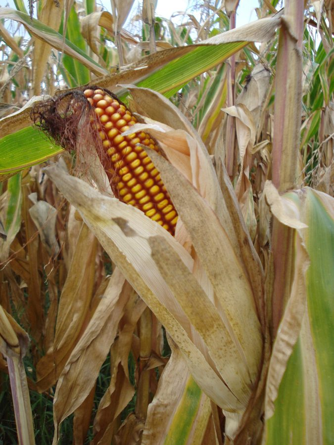

मक्काMaize
Zea mays · Poaceae · FLR-0054

- Scientific name
- Zea mays L.
- Family
- Poaceae
- Hindi
- मक्का
- Status here
- cultivated
- IUCN
- not evaluated
When to look कब देखें
Expected mainly in June, July, August, September, October.
मक्का / Maize
Zea mays L. — Poaceae
मक्का (मकई) — उत्तर प्रदेश की एक प्रमुख खरीफ (वर्षाकालीन) खाद्यान्न व चारा फसल है। यह एक सीधे बढ़ने वाला, विशाल आकार का वार्षिक घास का पौधा (annual grass) है जो 1.5 से 3 मीटर तक ऊंचा होता है। इसके पौधे में एक मोटा, ठोस तना होता है जिस पर चौड़ी, रिबन जैसी लंबी पत्तियां लगती हैं। पौधे के शीर्ष पर नर फूल आते हैं जिन्हें मंजरी (tassel) कहते हैं, जबकि पत्तियों के अक्ष से मादा फूल (ears/cobs) निकलते हैं जिनमें से सुनहरे रेशम जैसे धागे (silk) बाहर लटकते हैं। मानसून के दौरान (जून-अक्टूबर) मक्के की खेती ग्रामीण इलाकों में की जाती है। स्थानीय लोग इसके कच्चे भुट्टों को कोयले की आग पर भूनकर (भुट्टा) नींबू और नमक के साथ चाव से खाते हैं। इसके पौधे का उपयोग हरे चारे (चरी) के रूप में भी मवेशियों के लिए किया जाता है। मक्का अपनी तीव्र वृद्धि दर और मजबूत संरचना के लिए जाना जाता है।
Quick Identification त्वरित पहचान
| Feature | Description |
|---|---|
| Form | Tall, robust, erect annual grass (1.5–3 m tall) with a single, thick, solid stem carrying prominent nodes |
| Leaves | Alternately arranged, large, broad, ribbon-like (30–100 cm long, 5–10 cm wide) with wavy margins and a strong midrib |
| Male Flower | Terminal branched panicle called the "tassel," producing yellow wind-blown pollen at the very top of the plant |
| Female Flower | Enclosed cylindrical spike called the "ear" or "cob," borne in the middle leaf axils; topped by a cluster of long, thread-like styles called "silk" |
| Fruit | A large cob packed with rows of hard, rounded, starch-rich yellow grains (caryopses, 6–10 mm size), wrapped tightly in green leaf-like husks |
| Root system | Shallow fibrous roots supplemented by stout, ring-like aerial prop roots (brace roots) emerging from the lower stem nodes to support the tall plant |
Field tip: An exceptionally tall, thick-stemmed grass crop in summer fields carrying a feathery tassel at the top and large, husk-wrapped cobs with golden silk threads hanging from the leaf axils.
Morphology आकारिकी
Biometrics (typical measurements for Kharif maize in Basti district):
| Feature | Measurement |
|---|---|
| Plant height | 1.5–3 m |
| Leaf length | 30–100 cm |
| Leaf width | 5–10 cm |
| Cob (ear) length | 15–25 cm |
| Grain size | 6–10 mm |
Inflorescence & Pollination: Monoecious. The male tassel opens first, shedding pollen that is carried by wind to the sticky female silk below. Each silk thread is connected to a single ovule on the cob; fertilization must occur for that specific grain to form.
Brace roots: The stilt-like brace roots emerge from nodes 1–3 above the ground, anchoring the heavy plant in wet, monsoon-soaked soils to prevent lodging.
Associated Species / Interactions सहजीवी संबंध
Monsoon agro-ecological hub.
- Insect associates: Serves as a primary host for various phytophagous insects, including the invasive Fall Armyworm and stem borers. During August, the loud summer calls of cicadas (
[INS-0033 Cicada]) peak in mature maize fields. - Bird foragers: Ripening sweet cobs are targeted by parakeets (
[BRD-0008]relative) and House Crows ([BRD-0027 House Crow]), which tear open the husks to feed on soft milky grains. - Shelter provider: The tall, dense crop stands provide seasonal nesting and movement corridors for terrestrial mammals, such as Nilgai (
[MAM-0011 Nilgai]) and jackals ([MAM-0005]relative).
Life Cycle / Phenology जीवन चक्र
- Sowing: Planted with the arrival of monsoon rains in June–July, requiring well-drained upland fields (cannot tolerate waterlogging).
- Vegetative growth: Grows extremely fast during July–August due to its efficient C4 photosynthetic pathway, producing massive leaves and brace roots.
- Tasseling & Silking: The male tassel emerges at the top in late July, followed by female silks in August. Wind pollination occurs.
- Grain filling: Grains develop through August–September, transitioning from milk stage to soft dough, and finally dry hard kernels.
- Harvest: Dry cobs are harvested in September–October. The stalks are cut and used as dry stover (karbi) or animal bedding.
Pests and Diseases कीट और रोग
- Fall Armyworm: The larvae of the exotic moth Spodoptera frugiperda feed aggressively inside the whorl leaves, leaving large ragged holes and sawdust-like frass.
- Maize Stem Borer: Caterpillars of Chilo partellus tunnel inside the central stem, destroying the growing point and causing "dead heart" symptoms.
- Turcicum Leaf Blight: Fungal pathogen Exserohilum turcicum forms large, long, spindle-shaped straw-colored lesions on leaves, reducing photosynthetic capacity.
Agricultural / Human Relevance कृषि प्रासंगिकता
Monsoon dietary staple and animal fodder.
- Fresh Bhutta: In Basti and eastern UP, harvesting of green cobs is celebrated. They are roasted over hot charcoal pits by roadside vendors and served fresh with lemon juice, black salt, and spices.
- Agro-processing: Mature dried grains are ground into cornmeal (Makai ka Atta) to make flatbreads in winter, or processed into starch, corn oil, and poultry feed.
- Green Fodder: Sown densely as a seasonal fodder crop (chari) to feed dairy cattle, boosting winter milk yields.
- Local Cultivars: Sown varieties in Basti include hybrid cultivars like Deccan-103, Ganga-11, and Shaktiman series.
Traditional and Ethnobotanical Use
- Roasted Bhutta (Festival Food): Roasting whole green cobs on charcoal with salt and lemon juice is a traditional seasonal delicacy eaten during monsoon festivals, fairs, and local gatherings across eastern UP.
- Corn Silk Tea (Bhutte ka Bal): The dried golden silks (bhutte ka bal) from mature cobs are boiled in water to make a traditional herbal tea taken for urinary tract discomfort and kidney stone prevention.
- Makai ka Atta Laddu: Coarsely ground dried corn flour is roasted in ghee with jaggery and dry ginger to make nutritious laddus, traditionally given to new mothers and children during winter.
- Crop Stubble Craft: The dry, hollow cornstalks are used by village children to make simple flutes, toy boats, and weaving frames in traditional rural play.
Cultivation Calendar
| Stage | Month(s) |
|---|---|
| Field preparation | May–June (requires deep ploughing, ridge creation) |
| Sowing | June–July (immediately after first monsoon shower) |
| Vegetative growth | July–August (needs weeding and nitrogen top-dressing) |
| Flowering | August |
| Harvest | September–October |
Expected Locally स्थानीय रूप से अपेक्षित
Not a field record. Written from published accounts for eastern Uttar Pradesh. No confirmed local sighting yet — if you have seen it, that is what the atlas needs.
अभी तक स्थानीय पुष्टि नहीं। यह विवरण प्रकाशित स्रोतों से है, किसी अवलोकन से नहीं।
A common sight during monsoon across Basti district, particularly in upland sandy-loam tracts that do not accumulate standing water. Observed widely in Kaptanganj, Harraiya, and Vikramjot blocks. During July and August, roadside stalls selling charcoal-roasted bhutta are common along the national highway.
Distribution वितरण
Global range: Native to Mesoamerica (modern-day Mexico), where it was domesticated from the wild grass Teosinte over 9,000 years ago. It is now cultivated globally, ranking as the highest-produced cereal crop in the world.
In India: Cultivated throughout all states; Karnataka, Madhya Pradesh, Maharashtra, and Bihar are major producers.
In Uttar Pradesh: Grown in all plain districts during the monsoon season.
In Basti district / eastern UP: Cultivated resident; a vital Kharif cereal crop.
Research Questions शोध प्रश्न
- How does the damage level of Spodoptera frugiperda (Fall Armyworm) in Basti's maize fields correlate with the sowing date in June? / जून में बोने की तारीख के आधार पर मक्के में फॉल आर्मीवर्म के नुकसान के स्तर में क्या संबंध होता है?
- What is the efficiency of wind pollination in small household maize patches compared to large, continuous crop fields? / बड़े खेतों की तुलना में घरों के पास छोटे टुकड़ों में मक्के के परागण की सफलता दर में क्या अंतर होता है?
- Does the presence of brace roots improve the lodging resistance of tall hybrid maize varieties during heavy monsoon storms (aandhi)?
- Is corn hair tea (bhutte ka bal) effective as a natural diuretic in local folk medicine for urinary tract issues?
- Can children strip the husk from a fresh cob, count the rows of grains, and check if the total count of rows is always an even number? — An engaging mathematical botany activity (maize rows are genetically always even).
Similar Species मिलती-जुलती प्रजातियाँ
| Species | Key Difference | हिंदी |
|---|---|---|
Oryza sativa (Paddy [FLR-0014]) | Sown in flooded lowlands; leaves are much narrower; seeds are small husked grains arranged in loose panicles (no cobs). | धान — निचले दलदली खेत, सघन पतले पत्ते, बालीदार अनाज |
Saccharum officinarum (Sugarcane [FLR-0034]) | Grows as a semi-perennial crop; stems are solid and filled with sweet sap; does not produce axillary cobs with silk. | गन्ना — ठोस मीठा तना, बारहमासी फसल, अक्षीय भुट्टे नहीं |
| Sorghum bicolor (Jowar / Sorghum) | Leaf bases do not clasp the stem as tightly; seeds are produced in a terminal clustered panicle (not in axillary cobs). | ज्वार — शीर्ष पर गोल दानों का गुच्छा, भुट्टे नहीं होते |
Taxonomy & Classification वर्गीकरण
Original description. Carl Linnaeus described Maize as Zea mays in 1753 in his foundational Species Plantarum (Vol. 2, p. 971). The type locality was America. The genus name Zea is derived from the Greek zeia, a generic term for ancient wheats or grains. The specific epithet mays is the Spanish rendering of mahiz, the word for the crop in the extinct Taíno language of the Caribbean.
Subspecies. Monotypic as a wild lineage, but categorized into agricultural groups based on kernel characteristics (e.g. Z. mays var. indentata for dent corn, var. indurata for flint corn, and var. saccharata for sweet corn).
Family and order placement. Placed in the order Poales, family Poaceae (grass family), subfamily Panicoideae, tribe Andropogoneae.
Phylogenetic notes. Morphologically and genetically, Zea mays is descended from the wild Mexican annual grass Teosinte (Zea mays subsp. parviglumis), representing one of the most radical morphological transformations in agricultural history under human selection.
IUCN status rationale. Not evaluated (NE) by the IUCN Red List. As a globally cultivated staple crop with massive populations, it faces no conservation threats.
Photo Gallery फोटो गैलरी
References संदर्भ
- Linnaeus, C. (1753). Species Plantarum. Laurentii Salvii, Holmiae, Vol. 2, p. 971. [original description]
- ICAR-Indian Institute of Maize Research (IIMR). Integrated Pest Management for Fall Armyworm in Maize. IIMR Technical Bulletin, Ludhiana.
- Indian Council of Agricultural Research (2021). Handbook of Cereal Crops. ICAR, New Delhi.
- Brandis, D. (1906). Indian Trees. Archibald Constable & Co., London.
- Botanical Survey of India. State Flora Series: Flora of Uttar Pradesh. BSI, Kolkata.
- GBIF Occurrence Data — Zea mays (2026). GBIF taxon key: 5290052.
Source file: species/flora/crops/maize.md